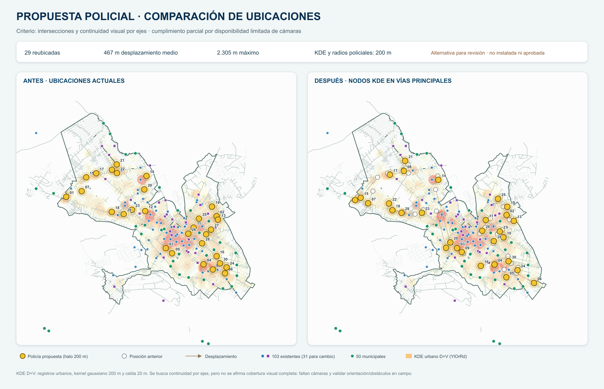

Propuesta policial · comparación de ubicaciones

Alternativa para revisión; no instalada ni aprobada. El KDE urbano D+V y los radios de 200 m son referencias espaciales; no certifican línea de vista. La continuidad visual por ejes es un objetivo parcial por disponibilidad limitada de cámaras y requiere validar orientación y obstáculos en campo.